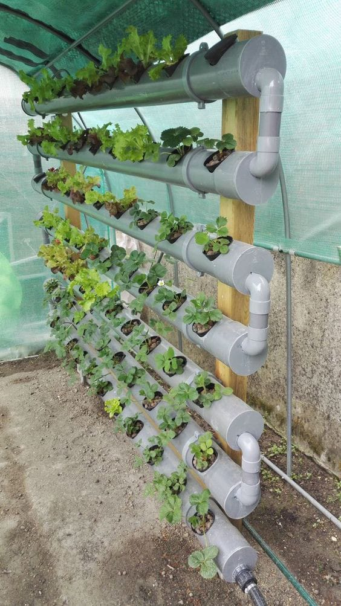
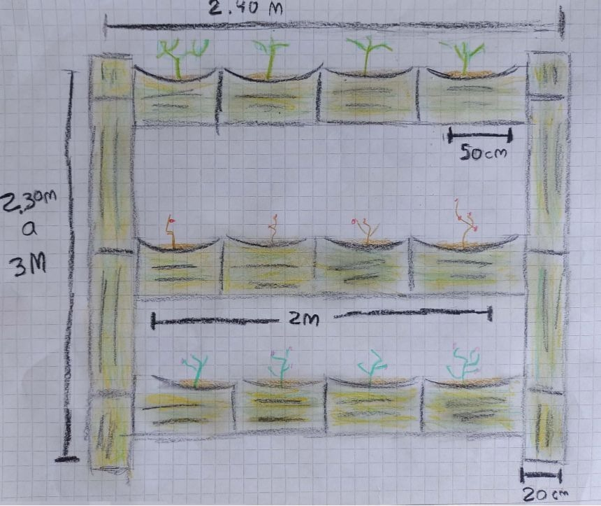
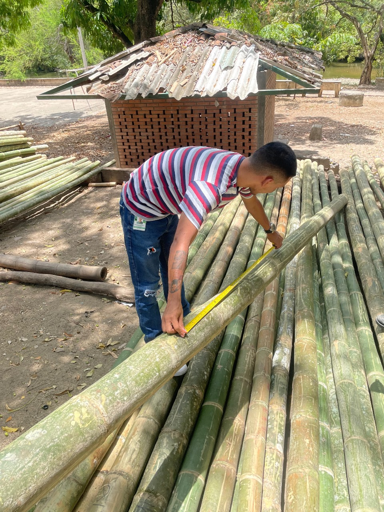
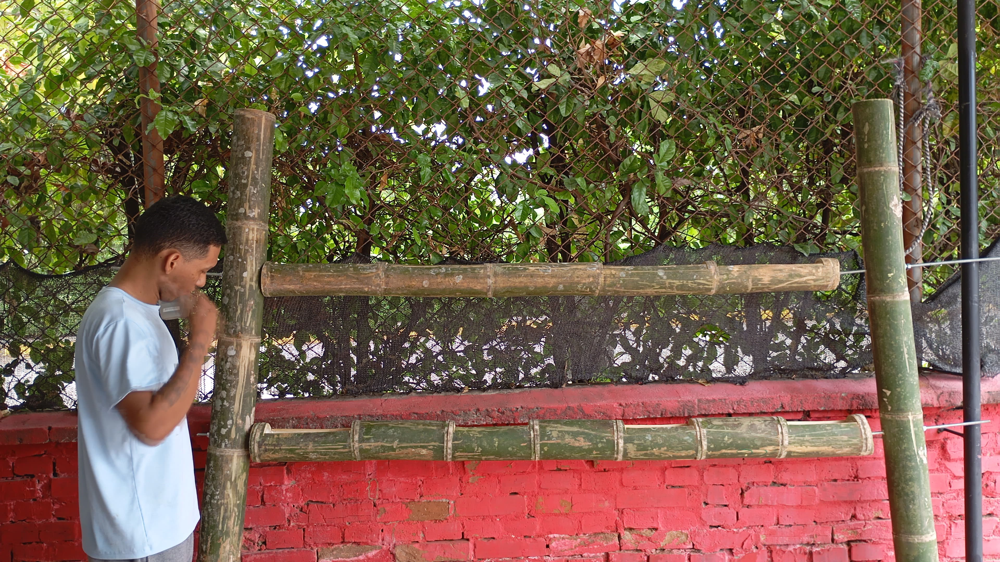

Huerto Ecologico
Introdución
En un mundo donde la sostenibilidad es esencial, nuestro proyecto se presenta como una respuesta innovadora a la necesidad de integrar prácticas ecológicas en la agricultura.Como estudiantes de la Universidad FET, hemos asumido el desafío de crear 2 huertos ecológicos utilizando materiales reciclables. Esta estructura fue diseñada para el cultivo de plantas aromáticas como hierbabuena, menta, albahaca, tomillo,entre otras.
Descripción
El proyecto "Huerto Ecológico: Innovación Sostenible con Materiales Reciclables" es una iniciativa desarrollada por estudiantes de la Universidad FET, con el objetivo de establecer ocho huertos ecológicos dentro del campus utilizando materiales reciclables. Este proyecto no solo busca embellecer el entorno universitario, sino también promover la educación ambiental y la sostenibilidad, integrando prácticas agrícolas responsables en la vida diaria de la comunidad.
Objetivos Del Proyecto
Fomentar la sostenibilidad en el campus universitario Crear un entorno verde y autosuficiente que promueva prácticas ecológicas y el uso de materiales reciclables dentro de la universidad. Impulsar la educación ambiental Integrar el aprendizaje práctico sobre la agricultura sostenible y el reciclaje en la vida diaria de los estudiantes y la comunidad universitaria. Establecer un recurso educativo permanente Dejar un legado en la universidad con huertos ecológicos que sirvan como un espacio de aprendizaje continuo y referencia en proyectos sostenibles.
Objetivos especificos
El proyecto "Huerto Ecológico: Innovación Sostenible con Materiales Reciclables" es una iniciativa desarrollada por estudiantes de la Universidad FET, con el objetivo de establecer ocho huertos ecológicos dentro del campus utilizando materiales reciclables. Este proyecto no solo busca embellecer el entorno universitario, sino también promover la educación ambiental y la sostenibilidad, integrando prácticas agrícolas responsables en la vida diaria de la comunidad.
Evidencias
Primera evidencia
Se realizaron las medidas para los cortes de las guaduas ya de manera física y presencial, el compañero Enrique David Burgos fue uno de los encargados en realizar estas medidas, utilizando como método de medida la cinta métrica, contando con el apoyo de Santiago A larcón para tomar las evidencias del trabajo realizado.
Segunda Evidencia

Se realizaron los cortes con las medidas exactas en las guaduas, los compañeros Enrique David Burgos y Juan Carlos Restrepo, fueron los designados para esta labor, utilizando como herramientas nuevamente la cinta métrica para las medidas y el serrucho como herramienta de corte, con el apoyo del compañero Sergio Castro y Luis Medina para realizar la toma de evidencias de la labor realizada ese día.
